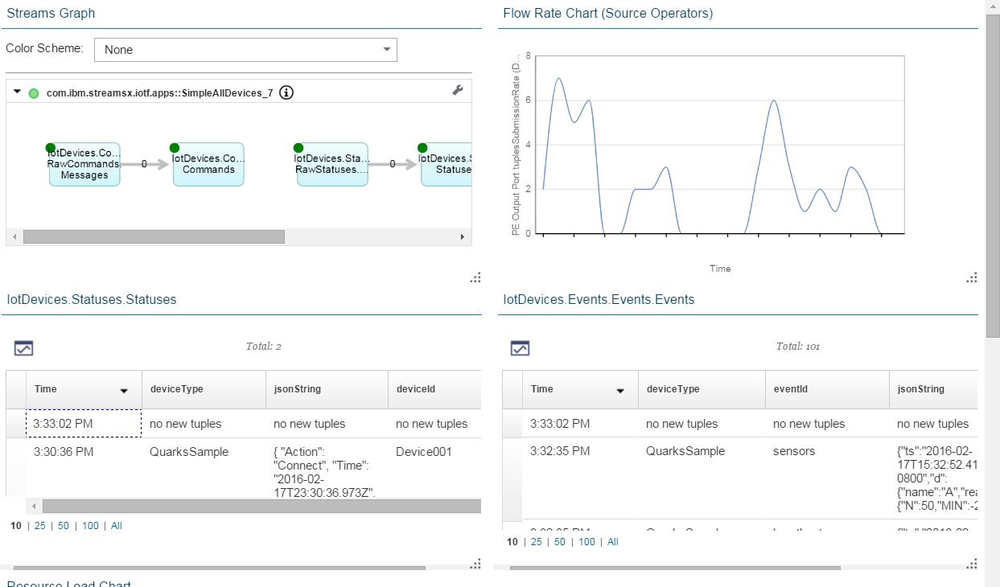

IBMStreams com.ibm.streamsx.iot Toolkit > com.ibm.streamsx.iot 1.0.2.commit_cdc1e1f > com.ibm.streamsx.iot.apps > ViewAllDevices.spl
Simple application that subscribes to all information for all devices.
This application is very simple in that it just creates views of device events, commands and status. The data may be viewed using IBM Streams views in Streams Studio or Streams console. This is intended as a way to verify connectivity between IoT Hub and IBM Streams and explore the events and commands the devices are producing and consuming
The application creates three views to allow you to easily create View Grids in the Streams console to view the data. For example here is a screen shot of the console running this application with grids created against the device status view bottom left, and the device event view bottom right.

Note that views are sampling so may not show all device events, commands or status.
An IoT hub application must be submitted that publishes all the device events and statuses such as com.ibm.streamsx.iot.watson.apps::IotPlatform.
Additional functionality may be added in the future.